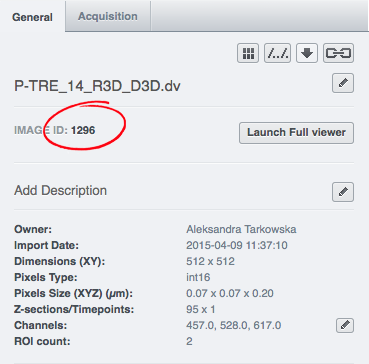
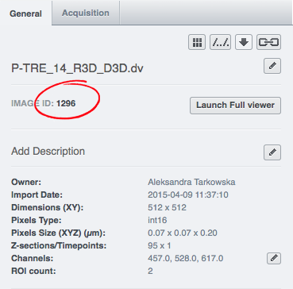
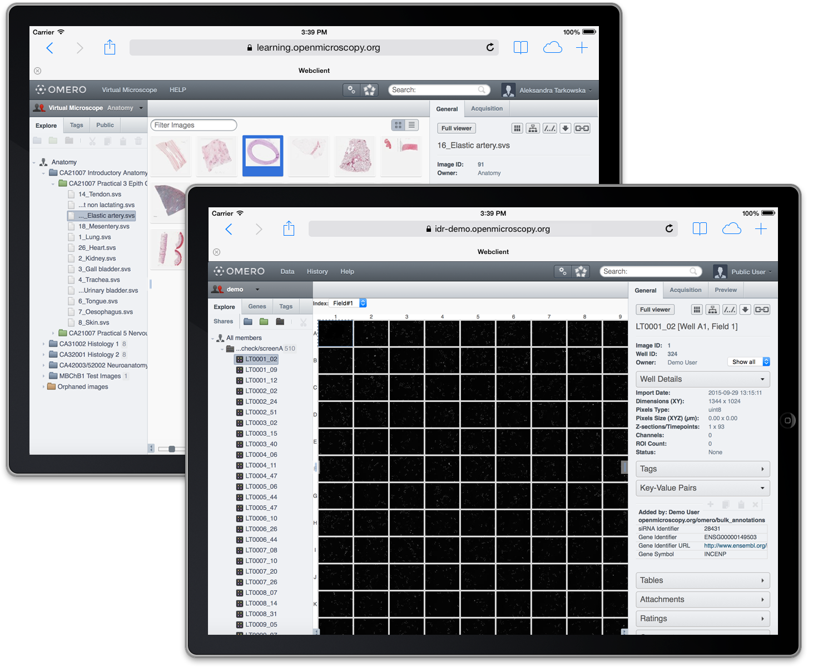
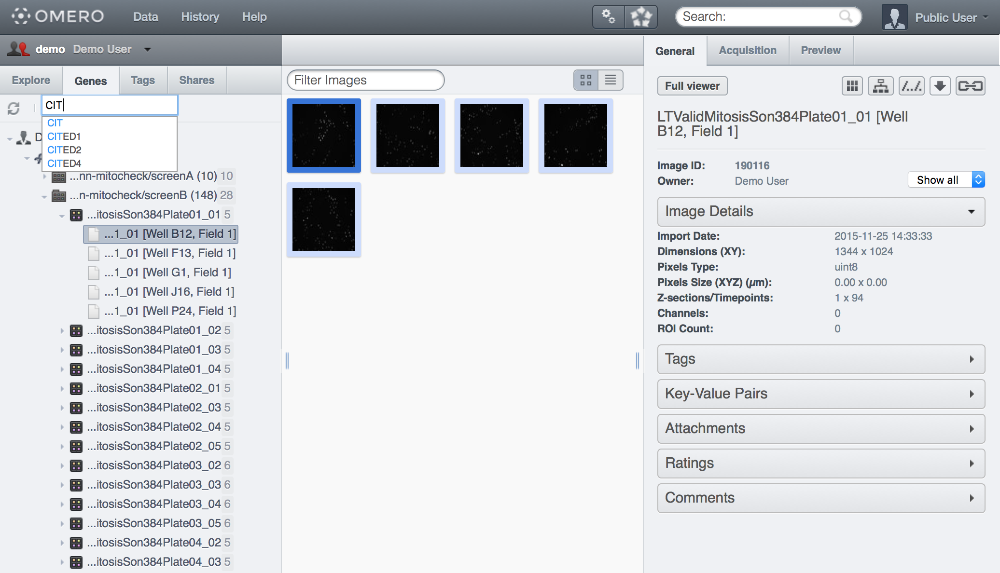
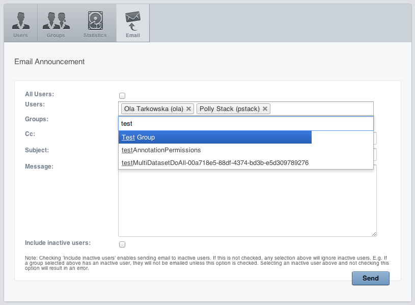

Public Repository:
permissions, deployment
and customization
11th Annual OME Meeting
Dundee 2016
Ola Tarkowska, Will Moore

OMERO & repositories
Presentation Outline
- Groups & Permissions
- User authentication
- Publishing data
- Customizing repository
- Performance and scaling up
Public data in OMERO

Examples
Public repositories:
Controlled repositories:

Deployment
Groups & Permissions
- Private
(rw----) - Read-Only
(rwr---) - Read-Write
(rwrw--)

Public User
- Public visitors are logged-in as a specified public user
- Visitors are able to access data available to public user
- Functionality exposed can be controlled by url filters
$ bin/omero config set omero.web.public.enabled True
$ bin/omero config set omero.web.public.server_id 1
$ bin/omero config set omero.web.public.user '<username>'
$ bin/omero config set omero.web.public.password '*****'
$ bin/omero config set omero.web.public.url_filter '^/webgateway'
$ bin/omero config set omero.web.public.url_filter '^/webgateway/(?!archived_files|download_as)'
$ bin/omero config set omero.web.public.url_filter '^/(webadmin/myphoto/|webclient/(?!(action|logout|annotate_(file|tags|comment|rating|map)|script_ui|ome_tiff|figure_script))|webgateway/(?!(archived_files|download_as)))'
Accessing Public data
Moving data to public space
 

LINK https://...
https://omero/webgateway/image_detail/12345/
https://omero/webgateway/render_thumbnail/12345/W/H/

Embedding </ >
ExampleHTML page
<link href="https://omero/static/omeroweb.viewer.min.css" type="text/css" rel="stylesheet">
<script src="https://omero/static/omeroweb.viewer.min.js" type="text/javascript">
<style type="text/css">
.viewport {
height: 500px;
width: 500px;
}
</style>
<javascript type="text/javascript">
/* Prepare the viewport */
viewport = $.WeblitzViewport($("#viewport"), "http://omero/webgateway/", {
'mediaroot': "http://omero/static/"
});
/* Load the selected image into the viewport */
viewport.load(IMAGE_ID);
});
</javascript>
<body>
<div id="viewport" class="viewport"></div>
</body>OMERO.web
Custom application
Customization
Webclient plugins
- Hooks to bring app content into webclient
- See webclient plugin docs
Center pane plugins
$ bin/omero config append omero.web.ui.center_plugins
'["Auto Tag", "webtagging/auto_tag_init.js.html", "auto_tag_panel"]'

Right hand pane plugins
$ bin/omero config append omero.web.ui.right_plugins
'["ROIs", "webtest/webclient_plugins/right_plugin.rois.js.html", "image_roi_tab"]'
Left hand pane plugins
Login screen
$ bin/omero config set omero.web.login_logo 'http://www.url/to/image.png'
$ bin/omero config set omero.web.index_template 'mytemplate/test.html'
$ bin/omero config set omero.web.template_dirs '/your/path/to/templates/'
Login redirection
$ bin/omero config set omero.web.login_redirect
'{"redirect": ["webindex"], "viewname": "load_template",
"args":["userdata"], "query_string": "experimenter=-1"}'
Post login page
$ bin/omero config set omero.web.login_redirect
'{"redirect": ["webindex"], "viewname": "webindex_custom"}'
Override existing view
@never_cache
@login_required()
@render_response()
def custom_index(request, conn=None, **kwargs):
context = {"version": omero_version}
active_group = request.session.get('active_group') or conn.getEventContext().groupId
group = conn.getObject("ExperimenterGroup", active_group)
leaders, members = group.groupSummary()
leaders.sort(key=lambda x: x.getOmeName() and x.getOmeName().lower())
context["courses"] = leaders
context['template'] = 'virtualmicroscope/start.html'
return context
omeroweb.webstart.views.custom_index = custom_index
Top links menu
$ bin/omero config append omero.web.ui.top_links
'["Figure", "webfigure"]'
$ bin/omero config set omero.web.ui.top_links
'["GRE", "http://lifesci.dundee.ac.uk/gre"]'

Group and Users
in dropdown menu
$ bin/omero config set omero.client.ui.menu.dropdown.leaders.enabled true
$ bin/omero config set omero.client.ui.menu.dropdown.leaders.label "Owners"
$ bin/omero config set omero.client.ui.menu.dropdown.colleagues.enabled true
$ bin/omero config set omero.client.ui.menu.dropdown.colleagues.label "Members"
$ bin/omero config set omero.client.ui.menu.dropdown.everyone.enabled true
$ bin/omero config set omero.client.ui.menu.dropdown.everyone.label "All Members"


Orphaned container
$ bin/omero config set omero.client.ui.tree.orphans.enabled true
$ bin/omero config set omero.client.ui.tree.orphans.name "New imports"
$ bin/omero config set omero.client.ui.tree.orphans.description "This folder containes newly imported images."
Disabling scripts
$ bin/omero config append omero.client.scripts_to_ignore "/my_scripts/script.py"

Download restriction
$ bin/omero config set omero.policy.binary_access "+read,+write,+image,-plate"


Email notification
Configuration
$ bin/omero config set omero.mail.config true
$ bin/omero config set omero.mail.from "sysadmin@localhost.domain"
$ bin/omero config set omero.mail.host "localhost"
$ bin/omero config set omero.mail.port 465
$ bin/omero config set omero.mail.username
$ bin/omero config set omero.mail.password
$ bin/omero config set omero.mail.smtp.starttls.enable true
LDAP authentication
Configuration
$ bin/omero config set omero.ldap.config True
$ bin/omero config set omero.ldap.urls "ldaps://ldap:636"
$ bin/omero config set omero.ldap.username "cn=ldapuser,ou=Lab,o=College"
$ bin/omero config set omero.ldap.password "***"
$ bin/omero config set omero.ldap.base "o=College"
$ bin/omero config set omero.security.ignore_case True
bin/omero config set omero.security.keyStore "/etc/certificates/pki/omero.store"
bin/omero config set omero.security.trustStore "/etc/certificates/pki/omero.store"
Mapping groups and users
$ bin/omero config set omero.ldap.group_mapping "name=cn"
$ bin/omero config set omero.ldap.user_mapping "omeName=cn,firstName=givenName
,lastName=sn,email=mail"
$ bin/omero config set omero.ldap.group_filter "(&(objectClass=groupOfUniqueNames)
(cn=repository))"
$ bin/omero config set omero.ldap.user_filter "(memberOf=cn=repository,ou=Lab
,o=College)"
$ bin/omero config set omero.ldap.new_user_group ":query:(uniqueMember=@{dn})"
$ bin/omero config set omero.ldap.new_user_group "Virtual Microscope"
LDAP & Command line
$ bin/omero ldap active
$ bin/omero ldap discover
$ bin/omero ldap getdn --user-name atarkowska
Using session 425b795b-1c7b-49c0-bd47-587252001744 (root@localhost:4064). Idle timeout: 60.0 min. Current group: system
atarkowska: cn=ATarkowska,ou=Lab,o=College
$ bin/omero ldap create wmoore
Using session 425b795b-1c7b-49c0-bd47-587252001744 (root@localhost:4064). Idle timeout: 60.0 min. Current group: system
Added user wmoore (id=1352) with DN=cn=wmoore,ou=Lab,o=College
$ bin/omero ldap list
Using session 425b795b-1c7b-49c0-bd47-587252001744 (root@localhost:4064). Idle timeout: 60.0 min. Current group: system
| Id | OmeName | DN
---+------+------------+---------------------------------
0 | 52 | atarkowska | cn=atarkowska,ou=Lab,o=College
1 | 1352 | wmoore | cn=wmoore,ou=Lab,o=College
OMERO session key-based authentication
https://omero/webgateway/img_detail/IMAGE_ID/ ?server=SERVER_ID&bsession=OMERO_SESSION_KEY$ bin/omero login
Previously logged in to localhost:4064 as root
Server: [localhost:4064]
Username: [test-user]
Password:
Created session 531389ec-300e-4a01-9bdf-90e9f3869473 (test-user@localhost:4064). Idle timeout: 60.0 min. Current group: read-only
$ bin/omero sessions list
Server | User | Group | Session | Active | Started
-----------+------+-----------------+--------------------------------------+-----------+--------------------------
localhost | test | read-only | 531389ec-300e-4a01-9bdf-90e9f3869473 | Logged in | Fri May 01 14:55:25 2015
localhost | root | system | 1f800a16-1dc2-407a-8a85-fb44005306be | True | Fri May 01 14:55:18 2015
(2 rows)
EXPERIMENTAL: Redis session backend
Requires: Python Redis 2.4+, django-redis-cache 1.6.5+
$ pip install django-redis-cache>=1.6.5
$ bin/omero config set omero.web.caches '{"default": {"BACKEND": "redis_cache.RedisCache", "LOCATION": "127.0.0.1:6379"}}'
Experimental: Nginx CACHE
Define caches
proxy_cache_path /data/omero levels=1:2 keys_zone=omero:10m inactive=30d use_temp_path=off;
proxy_cache_path /data/omero-thumbnail-cache levels=1:2 keys_zone=omerothumbnail:200m inactive=30d use_temp_path=off;
proxy_cache_path /data/omero-render-cache levels=1:2 keys_zone=omerorender:4000m inactive=30d use_temp_path=off;
proxy_cache_path /data/omero-metadata-cache levels=1:2 keys_zone=omerometadata:300m inactive=30d use_temp_path=off;
proxy_cache_path /data/omero-show-cache levels=1:2 keys_zone=omeroshow:600m inactive=30d use_temp_path=off;
Experimental: Nginx CACHE
Define filters
map $request_uri $uri_skip_cache
{
default 1;
"~webclient/api/paths_to_object*" 0;
"~web(client|gateway)/(metadata|render)_*" 0;
}
map $args $skip_cache
{
default $uri_skip_cache;
"~show=*" 0;
}
map $request_uri $cache_zone_name
{
default omero;
"~webclient/.*/?show=*" omeroshow;
"~webclient/api/paths_to_object/*" omeroshow;
"~webclient/metadata_*" omerometadata;
"~web(client|gateway)/render_thumbnail/*" omerothumbnail;
"~web(client|gateway)/render_image/*" omerorender;
}
upstream omeroweb_omero {
Experimental: Nginx CACHE
Define filters
server {
...
location @proxy_to_app_omero {
proxy_cache $cache_zone_name;
# DO NOT use $scheme$request_method becuse it creates key
# per schema and request_method. Default for curl is HEAD.
# proxy_cache_key "$scheme$request_method$host$request_uri";
set $omero_cache_key "$host$request_uri";
proxy_cache_key $omero_cache_key;
proxy_cache_valid 200 301 302 30d;
proxy_cache_methods GET HEAD; # Only GET and HEAD methods apply
proxy_cache_use_stale error timeout invalid_header updating http_500 http_502 http_503 http_504;
proxy_cache_bypass $skip_cache;
proxy_no_cache $skip_cache;
proxy_ignore_headers "Set-Cookie" "Vary" "Expires";
proxy_set_header X-Forwarded-Proto $scheme;
proxy_set_header X-Real-IP $remote_addr;
proxy_set_header X-Forwarded-For $proxy_add_x_forwarded_for;
proxy_set_header Host $http_host;
proxy_redirect off;
# must be turned on for caching
# proxy_buffering off;
proxy_pass http://omeroweb_omero;
# DEBUGGING: TURN OFF ON PROD
add_header X-Proxy-Cache $upstream_cache_status;
add_header X-Proxy-Cache-Skip $skip_cache;
add_header X-Proxy-Cache-Skip $cache_zone_name;
add_header X-Proxy-Cache-Skip $omero_cache_key;
}
Experimental: Nginx CACHE
test
$ curl -I https://idr-demo.openmicroscopy.org/mito/webgateway/render_thumbnail/1/96/
HTTP/1.1 200 OK
Server: nginx/1.8.0
Date: Thu, 05 May 2016 13:54:37 GMT
Content-Type: image/jpeg
Connection: keep-alive
Vary: Cookie
X-Proxy-Cache: HIT
X-Proxy-Cache-Skip: 0
X-Proxy-Cache-zone: omerothumbnail
X-Proxy-Cache-key: idr-demo.openmicroscopy.org/mito/webgateway/render_thumbnail/1/96/
Future work
- WEB API
- Complex JavaScript and JSON API
- Cache
- Integration with 3rd party systems
- OMERO Single Sign On authentication
- Complex usage of ROIs and annotations.
Thank you
- Prof. Jason Swedlow
- OME team